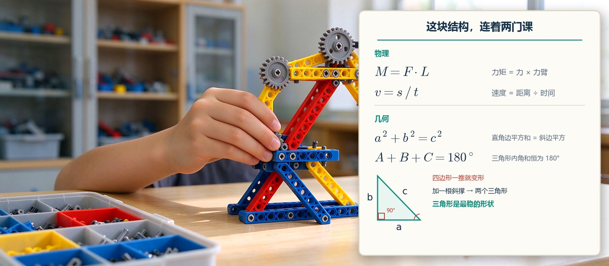

结构决定“能不能”：搭得稳不稳，和物理课、几何课有什么关系？
搭得稳不稳是结构问题，动得对不对是程序问题。孩子反复塌、反复加固的过程，会先把力矩、重心、摩擦用一遍，也在用双手练几何——三视图、角度、对称与相似，都能在他自己的作品上指出来。

结论先行：搭得稳不稳，是结构问题；动得对不对，是程序问题。孩子在课上反复塌、反复加固的过程，等于先把力矩、重心、摩擦、受力这些物理概念“用过一遍”。但迁移不会自动发生——得有人把“这里为什么要加一根斜撑”翻译成物理语言。指望它直接提物理分数，不会发生。同一套经验也在悄悄练几何：三视图、角度、对称、相似比，孩子是先在实物上认出来的。
一、结构决定“能不能”，程序决定“怎么动”
同一个程序，换一个结构，结果可以完全不同。课上最常见的一幕：孩子把避障程序写对了，小车一动就原地打转——因为两个轮子装得太靠中间，车头一压就翘起来，前轮离地，测距传感器读到的距离一直是错的。程序没错，是结构不允许它动。
反过来也成立：结构再精致，程序不写，它也只是个摆件。所以我们的课把这两件事放在同一节里：硬件是身体，编程是神经。只搭不写，孩子停在照图纸拼；只写不搭，孩子停在屏幕里。结构决定“能不能”，程序决定“怎么动”，缺一半都不成。
二、孩子搭东西时，真正在碰的四个物理量
- 力矩。机械臂伸得越长，末端越抬不起来。孩子把关节从第 4 个孔挪到第 8 个孔，力臂差不多翻倍，同一个马达就再也抬不动东西——力乘力臂这件事，他是先摸到、后明白的。
- 重心与支撑面。小车爬坡就翻，多半是电池仓装得太高。把最重的电池下移两格、左右轮距各加宽一格，翻车就消失。重心要落在支撑面里才稳，这句话孩子是自己试出来的。
- 摩擦与传动。齿轮咬得太紧转不动，太松就打滑空转；20 齿带 8 齿，大轮转一圈小轮转两圈半，速度是结构给的；轮子外圈加一圈橡胶，抓地立刻不一样。摩擦力这件事，讲十遍不如换一次轮子。
- 结构与强度。方形框架一推就歪，加一根斜撑立刻变成三角形——三角形是最稳的形状。原因是斜撑把“弯”改成了“拉”和“压”，而材料抗拉抗压的能力远大于抗弯。
这四件事都不是“先学公式再做题”，而是“先用、用到卡住、再回头找公式”。孩子先经历“它抬不起来”，才有动力去弄明白“为什么抬不起来”。
三、同一套搭建，也在练几何
结构不只连着物理。孩子在搭的时候其实一直在碰几何，只是没人告诉他那就是几何。
- 从三个方向看同一个东西。要跟别人说清“我这台车长什么样”，孩子得分别描述正面、侧面、顶上看到的样子，还得让对方在脑子里拼回去。这就是三视图的雏形——小学的“观察物体”、初中的“三视图”，起点在这里。
- 形状决定稳不稳。四边形的框一推就变形，加一根斜撑变成两个三角形就站住了。三角形稳定、四边形易变形，是几何性质，也是他手里摸得到的事实。
- 角度、平行与垂直。斜撑装成多少度、两根梁是不是真平行、轮轴有没有装歪——先用眼睛判断，再用靠尺和量角器验证。量角、画角、判断平行的题，在他手里是有实物的。
- 对称与相似。左右对称的车才不会跑偏；同一个结构放大一倍，梁要加长，但孔位之间的比例不变——这就是相似。齿轮也一样：大小不同，齿形相同。
- 长度、面积与周长。轮距加宽一格、底盘加长两格，抓地和通过性立刻不一样。孩子改的是尺寸，算的是周长与面积，感受到的是“尺寸一变，性能跟着变”。
- 展开图与空间关系。到 3D 建模课更明显：一个盒子由六个面围成，摊平是什么样、折回去怎么对上，孩子得自己在软件里转着看。这正是立体图形与展开图那一章最缺的直观。
边界也要说清：这些经验练的是空间想象和图形直觉，不是几何证明。校内几何要求写“因为……所以……”的推理步骤、要求规范作图，结构课不教这些，也替代不了。它管的是“看得见、想得出”；书写与证明，仍要回到课堂。
四、为什么“先塌一次”比“先背定义”有效
物理难在抽象：力看不见，力矩看不见，重心也看不见。结构课把它们全变成了可见的结果——歪了、翻了、打滑了、卡住了，每一次失败都有一个具体位置可以指：“就是这里松了”。这种“错误可定位”的经验，正好是物理题里最缺的能力：知道结果不对，还要知道错在哪一步。
还有一个更实际的好处：试错成本低。拆四颗销钉、换一个孔位，三十秒就能验证一个新想法；同一件事在纸上要算半天，在这里可以直接看结果。孩子先建立“我能改、改了会不一样”的手感，再去学定量计算，才不会觉得公式是天上掉下来的。
五、迁移究竟发生在哪三处
先把边界说清楚：结构课不会自动让孩子物理变好。真正可能迁移的只有三件事。
- 把现象翻译成量。孩子说“它转得慢”，家长可以接一句“是齿轮比小了，还是马达力气不够？”——把感觉变成可查的原因。
- 从例子找规律。同一座桥，加一根斜撑就稳，加两根也一样稳，孩子会归纳出“三角支撑够用了”。这就是从具体到一般。
- 用结果验证猜想。先猜“把支点往前挪会不会更容易抬起来”，再动手改、再看结果。这个顺序和物理实验一模一样。
少了这三步，搭得再多也只是熟练工。
六、我们课堂里的对应做法
我们不给图纸，只给任务：让机械手把积木从 A 点搬到 B 点，或者让小车在三分钟内绕完一圈不碰边。孩子自己定方案，塌了自己改。2–4 人小班，老师能逐个问“你为什么要加这根梁”，而不是统一讲标准答案。低龄 60 分钟／次、三年级以上 120 分钟／次，一周 1 次。
课上老师还会做一件事：孩子改对之后，把他的话翻译成术语——“你刚才加的那根叫斜撑，它把弯变成了拉”。这一句翻译，是“玩”和“学物理”之间的那道门。
七、什么时候这套不管用
三种情况要提前说清楚。孩子只想照图纸拼完就走、不愿意改第二版，那结构课对他的价值有限；家里没人陪他复盘，作品搭完就收进盒子，现象没被翻译成语言，迁移基本不会发生；家长把结构课当成物理补习的替代品、期待一学期提分，大概率会失望——校内基础计算还没过关的孩子，先补基础更实际。结构课是另一条腿，不是拐杖。
八、到店可以问的三句话
想判断一家机构的结构课是不是真在教物理，问三句就够：课上是给图纸还是给任务？孩子搭塌了，老师是直接帮他改，还是让他自己找原因？改对之后，老师会不会把那句物理话点出来？三句都答得具体，这门课才可能真的连着物理。
九、下一步
想知道孩子现在更适合先练结构，还是先上图形化编程，来校区做一次测评即可。测完我们直接说结论，不绕弯子。
题图：实景部分为本站为说明结构搭建形式生成的教学场景示意图（非校区实拍）；右侧力矩、速度与勾股定理、三角形内角和为示意排版。
想了解这节课适不适合孩子？
校区在天津市河西区大沽南路 459 号下瓦房晶采大厦写字楼四楼 408 室，09:00–19:00 可到访，也可在线预约体验课。